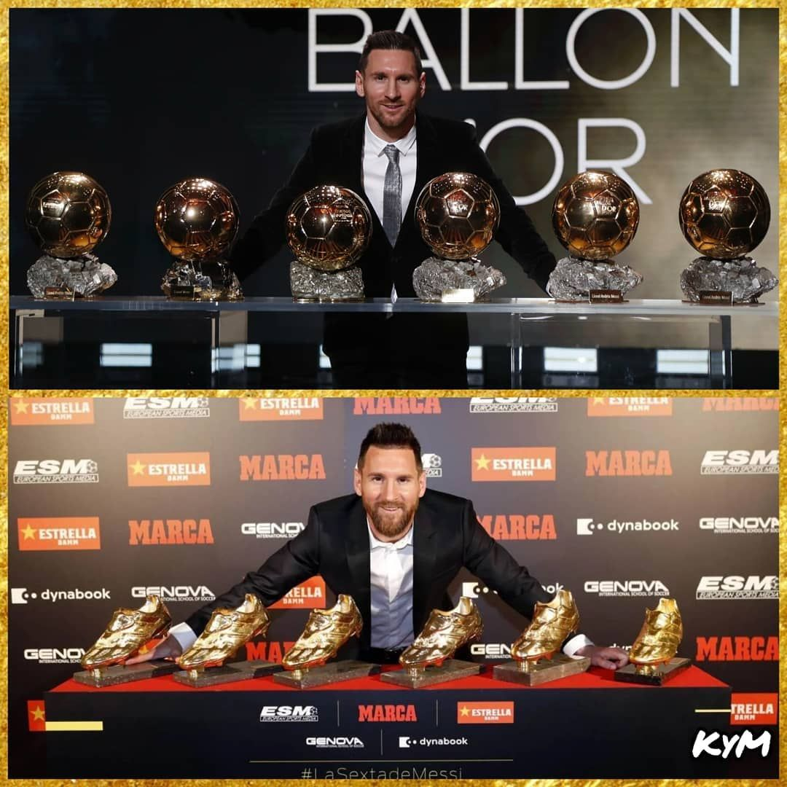
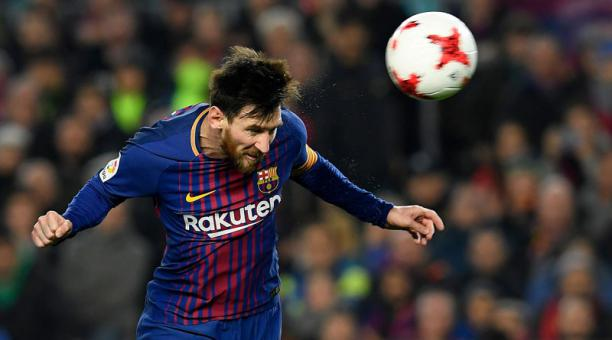
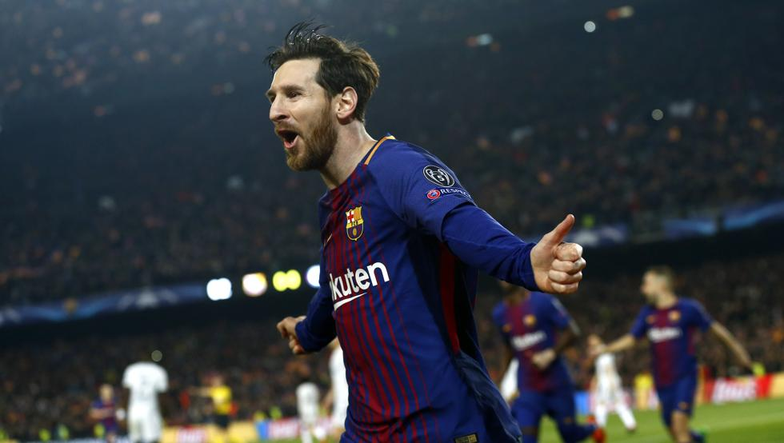
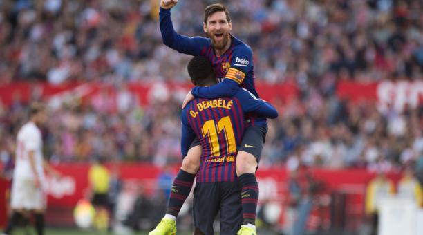
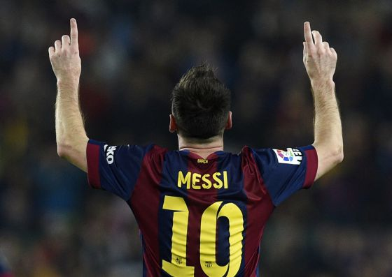
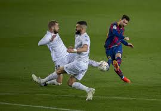
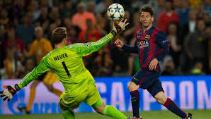
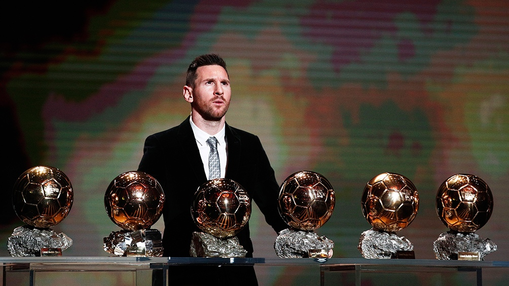
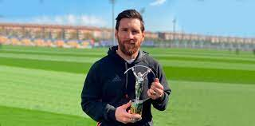

El año 2012 fue especial en la carrera de Messi. Sus números desde el 1 de enero al 31 de diciembre fueron estratosféricos.
Marcó 91 goles, 79 con el Barça y 12 con Argentina, superando un registro que parecía inalcanzable: los 85 goles del ‘Torpedo’
alemán Gerd Müller en 1972. Además, Leo dio 24 asistencias en aquel año natural, lo que significa una incidencia directa en 115 goles.
Una barbaridad.
VIDEO
Es el único con seis Balones de Oro y seis Botas de Oro
Leo Messi es el único jugador en la historia del fútbol que ha ganado seis Balones de Oro y seis Botas de Oro.
Es la demostración de que no sólo se ha ganado la admiración universal por su goles, sino también por su calidad futbolística.
Antes que él, sólo Johan Cruyff, Michel Platini y Marco van Basten habían ganado tres. El Balón de Oro lo ganó en 2009, 2010, 2011,
2012, 2015 y 2019,mientras que la Bota de Oro la conquistó en las temporadas 2009-10, 2011-12, 2012-13, 2016-17, 2017-18 y 2018-19.

Gol de Messi a Liverpool gana premio al mejor del año de la UEFA
La espectacular anotación de Messi fue elegida por los aficionados a través de una encuesta realizada
en la página web de la UEFA, organismo que ya había elegido el mismo gol
como el mejor de la pasada edición de la Champions.
VIDEO
SEGUNDA SECCION
Más goles en el Barça
Messi también superó a Paulino Alcántara como máximo goleador de la historia del Barça contando amistosos,
y lo hizo con un ‘hat-trick’ ante Osasuna el 16 de marzo de 2014.
Leo superó aquella tarde los 369 tantos de Alcántara,
que fue relegado al segundo puesto seguido de Samitier, con 333 dianas, y César, con 301 goles.

Más goles en LaLiga
El crack del FC Barcelona escribió su nombre con letras de oro en la historia de LaLiga el 22 de noviembre de 2014,
cuando marcó un ‘hat-trick’ al Sevilla en el Camp Nou y superó a Telmo Zarra como máximo goleador histórico del campeonato nacional
de la regularidad. Zarra marcó 251 y es tercero por delante de Hugo Sánchez (234),
Raúl (228) y Di Stefano (227). Leo lleva actualmente 447 dianas en LaLiga, y Cristiano se colocó segundo con 311.

Más clubs batidos en la Champions
Tras anotar esta temporada contra el Ferencvaros, Messi ya suma 36 equipos a los que ha batido en Champions.

TERCERA SECCION
Más estadios con gol en Champions
Leo ha conseguido marcar en 28 estadios en Champions, repartidos en 25 ciudades.

Más goles en Champions en un club
Messi lleva 118 goles en la máxima competición continental y nadie tiene sus números en un solo equipo.

Más goles en un partido Champions
Sus cinco goles contra el Bayern Leverkusen en los octavos de final de la Champions 2011-12 son un récord de la competición.

CUARTA SECCION
Más podios en el Balón de Oro
El capitán del Barça ha estado entre los tres mejores en el Balón de Oro 12 veces, además de ser el único en ganarlo en seis ocasiones.

Único jugador con un Laureus
En 2020, Messi se convirtió en el primer futbolista en ganar un Laureus, además
de contar con siete nominaciones como mejor deportista del año.

Más goles en las grandes ligas
Los 447 goles anotados por Messi en LaLiga lo convierten en el jugador con más tantos anotados en las cinco mejores ligas de Europa.